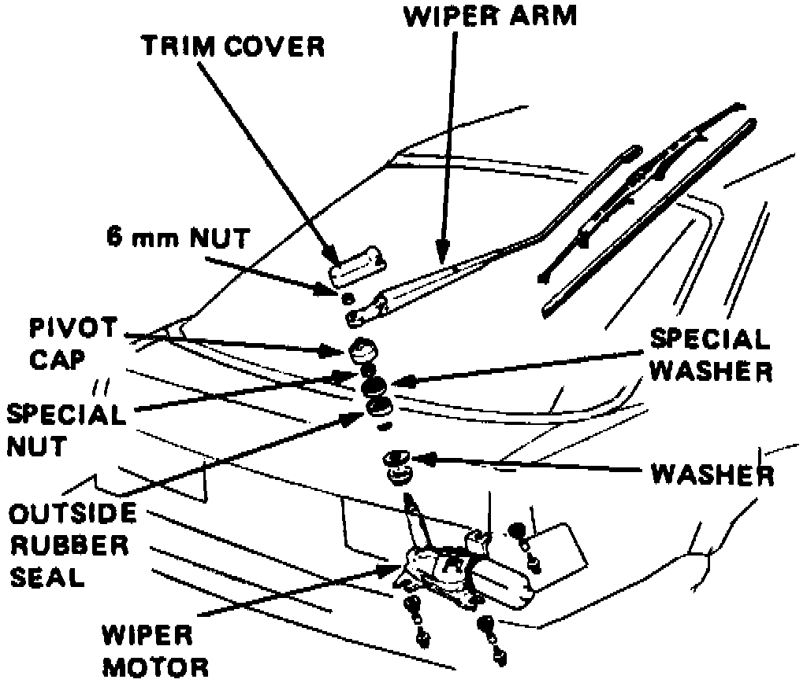

Rear Wiper Motor
1. On models equipped with radio coded theft protection system, refer to Vehicle Damage Warnings for system disarming and arming procedures.Fig. 15 Rear Wiper Motor Replacement:

2. Remove hatch trim panel, then the trim cover, wiper arm attaching nut, pivot cap, nut and outside seal rubber, Fig. 15.
3. Disconnect electrical connector from wiper motor, then remove motor attaching bolts and motor.
4. Reverse procedure to install.
5. On models equipped with radio coded theft protection system, refer to Vehicle Damage Warnings for system disarming and arming procedures.